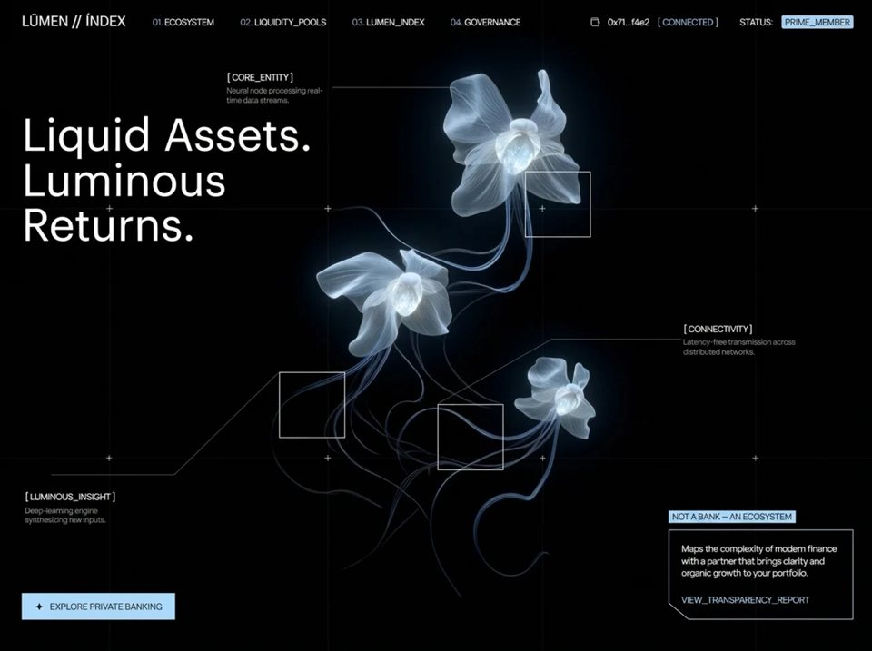

Aurex Finance
Fintechfintechyilai-ai 公开页面
收录时间：2026-08-20正文：29,832 字符

本地预览图 · jpeg
完整提示词
Build a **single full-screen hero section** for a DeFi / private-banking landing page called **LŪMEN // ÍNDEX**. Use **React 18 + TypeScript + Vite + Tailwind CSS**, with `lucide-react` for icons. The entire page is ONE component rendering ONE `<section>` that fills the viewport — no scrolling, no other sections.
## 0. Project setup
Dependencies: `react@^18.3.1`, `react-dom@^18.3.1`, `lucide-react@^0.446.0`. Dev: `vite@^5.4.2`, `@vitejs/plugin-react`, `tailwindcss@^3.4.1`, `postcss`, `autoprefixer`, `typescript@^5.5.3`.
`tailwind.config.js` — leave the theme completely unextended. Nearly every value in this design is an arbitrary-value class (`text-[13px]`, `bg-[#AFDDFF]`, `px-[35px]`), so no custom theme tokens are needed:
```js
/** @type {import('tailwindcss').Config} */
export default {
content: ['./index.html', './src/**/*.{js,ts,jsx,tsx}'],
theme: { extend: {} },
plugins: [],
};
```
`src/main.tsx` mounts `<App />` in `<StrictMode>` into `#root` and imports `./index.css`.
## 1. `index.html` — fonts and metadata
The page title is exactly `LŪMEN // ÍNDEX` (macron U, acute I). Load **two** font families in `<head>`, in this order:
```html
<!doctype html>
<html lang="en">
<head>
<meta charset="UTF-8" />
<link rel="icon" type="image/svg+xml" href="/vite.svg" />
<meta name="viewport" content="width=device-width, initial-scale=1.0" />
<title>LŪMEN // ÍNDEX</title>
<link href="https://db.onlinewebfonts.com/c/ca3d10781128664daddf89bf2e2d1305?family=Graphik+LCG+Regular+Regular" rel="stylesheet">
<link href="https://fonts.googleapis.com/css2?family=Manrope:wght@400;500&display=swap" rel="stylesheet">
</head>
<body>
<div id="root"></div>
<script type="module" src="/src/main.tsx"></script>
</body>
</html>
```
- **Display font** — `Graphik LCG Regular Regular` (fallback stack `'Graphik LCG', sans-serif`). Used ONLY for the logo wordmark and the H1.
- **UI font** — `Manrope` weights 400 and 500. Used for everything else — nav items, wallet strip, node labels, body copy, CTA.
## 2. Design tokens
| Token | Value | Usage |
|---|---|---|
| Accent (ice blue) | `#AFDDFF` | nav numbers, `[ CONNECTED ]`, badge fills, CTA background, polygon stroke, link text |
| Accent hover | `#c8e8ff` | CTA hover background only |
| Page background | `#000` (pure black) | body + section |
| Primary text | `#FFFFFF` | |
| Muted text | `rgba(255,255,255,0.5)` (`text-white/50`) | node description paragraphs |
| Nav number tint | `#AFDDFF` at 80% (`text-[#AFDDFF]/80`) | the `01.` `02.` prefixes |
| Grid line | `rgba(255,255,255,0.04)` (`bg-white/[0.04]`) | full-bleed grid |
| Plus mark | `rgba(255,255,255,0.7)` (`bg-white/70`) | grid intersections |
| Node border | `rgba(255,255,255,0.8)` (`border-white/80`) | the three squares |
| Connector stroke | `rgba(255,255,255,0.25)` | SVG lines |
| Menu divider | `rgba(255,255,255,0.1)` (`border-white/10`) | mobile menu wallet block top border |
| Menu backdrop | `rgba(0,0,0,0.9)` + `backdrop-blur-md` | mobile overlay |
Two easing curves, used consistently:
- **Entrance animations:** `cubic-bezier(0.16, 1, 0.3, 1)` (expo-out)
- **Interactive transitions (menu, hamburger):** `cubic-bezier(0.76, 0, 0.24, 1)` (expo-in-out)
---
# 3. SPACING SYSTEM — read this before writing any markup
## 3.1 The global reset kills all defaults
```css
* { margin: 0; padding: 0; box-sizing: border-box; }
```
This means **every space visible on the page is explicitly declared.** There are no inherited paragraph margins, no default list spacing, no button padding from the UA stylesheet. If a gap exists, it comes from one of the values in the tables below. `box-sizing: border-box` also means all `w-[…]`/`h-[…]` values *include* padding and border.
## 3.2 The page gutter (most important rule)
The whole composition hangs off a **two-value gutter**: **20px below `md`, 35px at `md` and above.** Four separate elements independently declare this same gutter, and they must match exactly or the layout visibly breaks alignment:
| Element | Mobile | `md`+ (≥768px) |
|---|---|---|
| `<nav>` horizontal padding | `px-5` → 20px | `md:px-[35px]` → 35px |
| `<h1>` left offset | `left-5` → 20px | `md:left-[35px]` → 35px |
| Bottom row left offset | `left-5` → 20px | `md:left-[35px]` → 35px |
| Bottom row right offset | `right-5` → 20px | `md:right-[35px]` → 35px |
| Mobile menu panel padding | `px-5` → 20px | (menu is hidden at `lg`+) |
The nav uses **padding**, while the H1 and bottom row use **absolute `left`/`right` offsets** — different mechanisms, identical result. The wordmark, the H1's first character, and the CTA button's left edge all land on the same vertical line.
**Vertical gutter** is asymmetric — the nav's is 20/27px, the bottom row's is 20/35px:
| Element | Mobile | `md`+ |
|---|---|---|
| `<nav>` vertical padding | `py-5` → 20px | `md:py-[27px]` → 27px |
| Bottom row bottom offset | `bottom-5` → 20px | `md:bottom-[35px]` → 35px |
## 3.3 Complete spacing reference — every value on the page
Tailwind numeric classes used (1 unit = 4px):
| Class | Computed | Where |
|---|---|---|
| `px-5` / `py-5` | 20px | nav padding, menu panel horizontal padding |
| `left-5` / `right-5` / `bottom-5` / `top-5` | 20px | H1 offset, bottom row offsets, menu close button |
| `gap-5` | 20px | bottom row gap (mobile, stacked) |
| `gap-3` | 12px | mobile menu row: number ↔ label |
| `mb-3` | 12px | mobile menu wallet row 1 bottom margin |
| `gap-8` | 32px | mobile menu nav list vertical gap |
| `pt-10` / `pb-10` | 40px | menu wallet block top padding, menu panel bottom padding |
| `pt-24` | 96px | menu panel top padding |
| `mt-auto` | — | pushes menu wallet block to the bottom |
| `ml-auto` | — | pushes nav right group / hamburger to the right |
Arbitrary bracket values used:
| Value | Where |
|---|---|
| `2px` | vertical padding — `PRIME_MEMBER` chip, `NOT A BANK` badge |
| `3px` | gap between nav item number and label; chip border radius |
| `4px` | `mt-[4px]` above every node description paragraph |
| `5px` | horizontal padding — `PRIME_MEMBER` chip |
| `6px` | horizontal padding — `NOT A BANK — AN ECOSYSTEM` badge |
| `8px` | gap in mobile menu wallet row 2 (`STATUS:` ↔ chip) |
| `10px` | CTA button internal gap (star ↔ label); mobile menu wallet row 1 gap; badge bottom margin |
| `12px` | nav right-group gap; CTA vertical padding at `md`+ |
| `16px` | CTA horizontal padding on mobile |
| `18px` | `mb-[18px]` — info card paragraph bottom margin |
| `20px` | gutter; `ml-[20px]` before `STATUS:`; info card body padding `p-[20px]`; CTA horizontal padding at `md`+ |
| `27px` | nav vertical padding at `md`+ |
| `35px` | gutter at `md`+ |
| `40px` | nav left-group gap AND nav links gap; hamburger/close button box size |
## 3.4 Elements with NO padding or margin
Do not add spacing to these — they are positioned purely by absolute coordinates or flex:
- `<section>`, the `<video>`, the content layer `<div>`
- The mobile menu wrapper and backdrop (both `inset-0`)
- `<h1>` (positioned by `top`/`left` only)
- All grid lines and plus marks
- The `CentralNodes` container, all three squares, all connector SVGs
- Node label `<span>`s (only their sibling `<p>` has `mt-[4px]`)
- The info card outer wrapper (padding lives on the inner body div)
---
## 4. `src/index.css` — reset, font classes, keyframes
```css
@tailwind base;
@tailwind components;
@tailwind utilities;
* { margin: 0; padding: 0; box-sizing: border-box; }
body { background: #000; overflow-x: hidden; }
.font-graphik { font-family: 'Graphik LCG Regular Regular', 'Graphik LCG', sans-serif; }
.font-manrope { font-family: 'Manrope', sans-serif; }
@keyframes fadeUp { from { opacity: 0; transform: translateY(18px); } to { opacity: 1; transform: translateY(0); } }
@keyframes fadeIn { from { opacity: 0; } to { opacity: 1; } }
@keyframes slideInLeft { from { opacity: 0; transform: translateX(-20px); } to { opacity: 1; transform: translateX(0); } }
@keyframes slideInRight{ from { opacity: 0; transform: translateX(20px); } to { opacity: 1; transform: translateX(0); } }
@keyframes scaleIn { from { opacity: 0; transform: scale(0.85); } to { opacity: 1; transform: scale(1); } }
@keyframes drawLine { from { opacity: 0; stroke-dashoffset: 100; } to { opacity: 1; stroke-dashoffset: 0; } }
@keyframes gridReveal { from { opacity: 0; transform: scaleY(0); } to { opacity: 1; transform: scaleY(1); } }
@keyframes gridRevealH { from { opacity: 0; transform: scaleX(0); } to { opacity: 1; transform: scaleX(1); } }
.anim-fade-up { opacity: 0; animation: fadeUp 0.9s cubic-bezier(0.16,1,0.3,1) forwards; }
.anim-fade-in { opacity: 0; animation: fadeIn 0.8s cubic-bezier(0.16,1,0.3,1) forwards; }
.anim-slide-left { opacity: 0; animation: slideInLeft 0.8s cubic-bezier(0.16,1,0.3,1) forwards; }
.anim-slide-right { opacity: 0; animation: slideInRight 0.8s cubic-bezier(0.16,1,0.3,1) forwards; }
.anim-scale-in { opacity: 0; animation: scaleIn 0.7s cubic-bezier(0.16,1,0.3,1) forwards; }
.anim-grid-v { opacity: 0; transform-origin: top; animation: gridReveal 1.2s cubic-bezier(0.16,1,0.3,1) forwards; }
.anim-grid-h { opacity: 0; transform-origin: left; animation: gridRevealH 1.2s cubic-bezier(0.16,1,0.3,1) forwards; }
.anim-draw-line { stroke-dasharray: 100; stroke-dashoffset: 100; animation: drawLine 1s cubic-bezier(0.16,1,0.3,1) forwards; }
```
Note the animation transform distances are themselves a spacing decision: `fadeUp` travels **18px** vertically, the slide animations travel **20px** horizontally, and `scaleIn` starts at **0.85**. Every animated element starts at `opacity: 0` and uses `forwards` so it holds its end state. Stagger is driven purely by inline `style={{ animationDelay: 'Xms' }}`.
## 5. Root structure
```
<section class="relative w-full h-screen overflow-hidden bg-black"> ← no padding
├── <video> ← layer 0, absolute inset-0
└── <div class="relative z-10 w-full h-full"> ← content layer, no padding
├── <nav> ← absolute top strip, px-5/35 py-5/27
├── mobile menu overlay ← fixed inset-0 z-50
├── <h1> ← absolute, no padding
├── <GridLines /> ← 4 vertical + 2 horizontal + 8 plus marks
├── <CentralNodes /> ← 3 squares + 3 labels + 6 connector lines
└── bottom row ← absolute, inset 20/35px
```
## 6. Background video (layer 0)
Full-bleed autoplaying looped muted video, cover-fitted, fading in on load:
```jsx
<video
className="absolute inset-0 w-full h-full object-cover anim-fade-in"
src="https://d8j0ntlcm91z4.cloudfront.net/user_38xzZboKViGWJOttwIXH07lWA1P/hf_20260813_115057_94c3699b-0fd1-4124-bcf3-3626bb8c1f77.mp4"
autoPlay
muted
loop
playsInline
/>
```
Use that **exact CloudFront URL**. `muted` + `playsInline` are mandatory or iOS/Chrome will block autoplay. There is **no dark overlay or gradient scrim** over the video — text sits directly on it.
## 7. Top navigation
```jsx
<nav className="absolute top-0 left-0 w-full flex items-center px-5 md:px-[35px] py-5 md:py-[27px]">
```
**Nav spacing map:**
| Property | Mobile | `md`+ |
|---|---|---|
| Horizontal padding | 20px | 35px |
| Vertical padding | 20px | 27px |
| Total nav height | 20 + 21 + 20 = **61px** | 27 + 21 + 27 = **75px** |
(Content height is 21px — the wordmark's `leading-[21px]`, the tallest child.)
**Left group** — `flex items-center gap-[40px]`. The 40px gap separates the wordmark from the nav-links container.
1. **Wordmark** — literal string `LŪMEN // ÍNDEX`, class `font-graphik text-white text-[18px] md:text-[21px] leading-[21px] whitespace-nowrap anim-fade-up`, delay **200ms**. No margin or padding.
2. **Nav links** — `hidden lg:flex items-center gap-[40px]`. Another 40px, this time *between each of the four items*. Four `NavItem` components:
| number | label | delay |
|---|---|---|
| 01 | ECOSYSTEM | 350ms |
| 02 | LIQUIDITY_POOLS | 450ms |
| 03 | LUMEN_INDEX | 550ms |
| 04 | GOVERNANCE | 650ms |
`NavItem({ number, label, delay })` — wrapper `flex items-center gap-[3px] anim-fade-up`. The **3px gap** is deliberately tight so `01.` reads as attached to its label rather than as a separate item. Inside: a number span `font-manrope text-[#AFDDFF]/80 text-[13px] leading-[15.6px]` rendering `{number}.` (trailing period), then a label span `font-manrope text-white text-[13px] leading-[15.6px] cursor-pointer hover:text-[#AFDDFF] transition-colors`.
**Right group** — `hidden lg:flex items-center gap-[12px] ml-auto anim-slide-right`, delay **600ms**. `ml-auto` pushes it to the far right. A uniform **12px** gap separates all five children, with one exception:
| # | Child | Spacing notes |
|---|---|---|
| 1 | `<Wallet>` icon, `w-[15px] h-[15px]`, `strokeWidth={1.5}` | — |
| 2 | `0x71...f4e2` — `font-manrope text-white text-[13px] leading-[15.6px]` | 12px from icon |
| 3 | `[ CONNECTED ]` — same, `text-[#AFDDFF]` | 12px |
| 4 | `STATUS:` — white, **plus `ml-[20px]`** | 12 + 20 = **32px** effective — this breaks the strip into two visual clusters |
| 5 | `PRIME_MEMBER` chip | 12px |
**`PRIME_MEMBER` chip box model:** `bg-[#AFDDFF] rounded-[3px] px-[5px] py-[2px]` with `text-black text-[13px] leading-[15.6px]`. Rendered height = 2 + 15.6 + 2 = **19.6px**. This is the *only* rounded element on the entire page.
**Hamburger button** — `lg:hidden ml-auto relative w-[40px] h-[40px] flex items-center justify-center anim-fade-in`, delay **400ms**, `aria-label="Toggle menu"`, toggles `menuOpen`. **No padding** — it is a fixed 40×40 box centering a 22px icon, giving a 9px optical inset on each side and a comfortable tap target. It contains **two absolutely stacked spans** that cross-fade with rotation:
- Menu icon span: `opacity-100 rotate-0 scale-100` when closed → `opacity-0 rotate-90 scale-50` when open
- X icon span: `opacity-0 -rotate-90 scale-50` when closed → `opacity-100 rotate-0 scale-100` when open
- Both: `absolute transition-all duration-300 ease-[cubic-bezier(0.76,0,0.24,1)]`, icons `w-[22px] h-[22px] text-white` `strokeWidth={1.5}`
## 8. Mobile menu overlay
Wrapper: `fixed inset-0 z-50 lg:hidden transition-all duration-500 ease-[cubic-bezier(0.76,0,0.24,1)]`, toggling `visible` / `invisible` — visibility (not `hidden`) so the exit transition can play. No padding.
**Backdrop:** `absolute inset-0 bg-black/90 backdrop-blur-md transition-opacity duration-500 ease-[cubic-bezier(0.76,0,0.24,1)]`, `opacity-100` ↔ `opacity-0`, click closes the menu. No padding.
**Panel:** `relative h-full flex flex-col px-5 pt-24 pb-10 transition-all duration-500 ease-[...]`, animating `opacity-100 translate-y-0` ↔ `opacity-0 -translate-y-4` (16px).
**Panel spacing map:**
| Side | Value | Reason |
|---|---|---|
| Left / right | `px-5` → 20px | matches the page gutter |
| Top | `pt-24` → **96px** | clears the 61px nav plus the close button, so the first nav item starts well below the header |
| Bottom | `pb-10` → 40px | breathing room under the wallet block |
- **Close button:** `absolute top-5 right-5 w-[40px] h-[40px] flex items-center justify-center`, `aria-label="Close menu"`, containing an `<X>` at `w-[22px] h-[22px] text-white` `strokeWidth={1.5}`. The 20px top/right offsets align it with the hamburger it replaces.
- **Nav list:** `flex flex-col gap-8` → **32px between items**. Each row is `transition-all duration-500 ease-[cubic-bezier(0.76,0,0.24,1)]` animating `opacity-100 translate-x-0` ↔ `opacity-0 -translate-x-6` (24px), with **staggered `transitionDelay` of `${150 + i * 75}ms` when open, `0ms` when closing** (they cascade in, snap out together). Inner row: `flex items-center gap-3` → **12px** between number and label. Number: `font-manrope text-[#AFDDFF]/80 text-[14px] leading-[1]`. Label: `font-manrope text-white text-[28px] leading-[1.2] tracking-tight`.
- **Wallet block, pinned bottom:** `mt-auto pt-10 border-t border-white/10`. `mt-auto` absorbs all free space to push it down; **40px `pt-10`** sits between the divider rule and the first wallet row. Same 500ms transition, animating `opacity-100 translate-y-0` ↔ `opacity-0 translate-y-4` (16px), `transitionDelay` **450ms** open / 0ms closed.
- Row 1 — `flex items-center gap-[10px] mb-3`: **10px** between children, **12px** below the row. Contains Wallet icon (15px) + `0x71...f4e2` + `[ CONNECTED ]`.
- Row 2 — `flex items-center gap-[8px]`: **8px** between `STATUS:` and the `PRIME_MEMBER` chip (chip styling identical to desktop).
## 9. Main heading
Exact copy: **`Liquid Assets. Luminous Returns.`**
```
font-graphik text-white font-normal leading-[1em] absolute anim-fade-up
text-[32px] sm:text-[48px] md:text-[68px]
top-[140px] sm:top-[160px] md:top-[178px]
left-5 md:left-[35px]
max-w-[300px] sm:max-w-[420px] md:max-w-[554px]
```
Delay **400ms**. **No padding or margin** — position comes entirely from `top`/`left`.
**H1 spacing rationale:**
| Breakpoint | `top` | Nav height | Clear space below nav |
|---|---|---|---|
| < 640px | 140px | 61px | 79px |
| 640–767px | 160px | 61px | 99px |
| ≥ 768px | 178px | 75px | 103px |
`left` matches the page gutter exactly (20px → 35px). The tight `leading-[1em]` combined with `max-w` is what forces the wrap into three stacked lines — at `md` the 554px cap breaks it after "Liquid Assets." and again after "Luminous". Do not add letter-spacing.
## 10. Grid lines + plus intersections
A `GridLines` component. **No padding anywhere** — everything is percentage-positioned against the full viewport. Two hard-coded position arrays:
```js
const verticalPositions = ['12.6%', '37.5%', '61.9%', '86.2%'];
const horizontalPositions = ['32.7%', '71.4%'];
```
- **Vertical lines:** each `absolute top-0 h-full w-px bg-white/[0.04] anim-grid-v`, `style={{ left, animationDelay: `${600 + i * 100}ms` }}` → 600, 700, 800, 900ms. **1px wide, full viewport height, zero margin.** Wipe downward (`transform-origin: top`).
- **Horizontal lines:** each `absolute left-0 w-full h-px bg-white/[0.04] anim-grid-h`, `style={{ top, animationDelay: `${800 + i * 150}ms` }}` → 800, 950ms. **1px tall, full width.** Wipe rightward (`transform-origin: left`).
- **Plus marks:** nest the loops to place a mark at all **8** intersections. Wrapper `absolute anim-scale-in` at `{ top, left }`, delay `${1000 + (hi * 4 + vi) * 80}ms` → 1000, 1080, 1160, 1240, 1320, 1400, 1480, 1560ms. Two bars crossing at the exact point — the **`-translate-x-1/2 -translate-y-1/2` on both bars is what centers the plus on the intersection**; without it the mark hangs down-right of the crossing:
- horizontal bar: `absolute w-[10px] h-px bg-white/70 -translate-x-1/2 -translate-y-1/2`
- vertical bar: `absolute w-px h-[10px] bg-white/70 -translate-x-1/2 -translate-y-1/2`
Each plus is a **10×10px** cross. The grid stays visible at all breakpoints.
## 11. Central nodes — squares, labels, connectors
`CentralNodes` component: `absolute inset-0 pointer-events-none hidden md:block` — **the entire node system is hidden below `md` (768px)**, and has no padding.
Every square: `absolute w-[80px] h-[80px] lg:w-[100px] lg:h-[100px] border border-white/80 anim-scale-in`. **Empty — no padding, no content.** Because of `box-sizing: border-box` the 1px border is inside the 80/100px box.
Every label group is an absolutely positioned block with **no padding**, containing:
- title span — `font-manrope text-white text-[13px] leading-[15.6px] whitespace-nowrap`
- description `<p>` — `font-manrope text-white/50 text-[11px] leading-[14px] mt-[4px]` — the **only** spacing inside a label group is that 4px top margin.
| Node | Square pos | Square delay | Label pos | Label anim / delay | Title | Description | Description max-w |
|---|---|---|---|---|---|---|---|
| 1 | `top-[27%] left-[60%]` | 1500ms | `top-[11%] left-[26%]` | `anim-slide-left` / 1100ms | `[ CORE_ENTITY ]` | Neural node processing real-time data streams. | `max-w-[160px]` |
| 2 | `top-[58%] left-[32%]` | 1800ms | `top-[76%] left-[3%]` | `anim-slide-left` / 1400ms | `[ LUMINOUS_INSIGHT ]` | Deep-learning engine synthesizing raw inputs. | `max-w-[160px]` |
| 3 | `top-[63%] left-[50%]` | 2100ms | `top-[50%] left-[78%]` | `anim-slide-right` / 1700ms | `[ CONNECTIVITY ]` | Latency-free transmission across distributed networks. | `max-w-[180px]` |
**Connector lines.** A `ConnectorLine({ x1, y1, x2, y2, delay })` component — each renders its own full-bleed SVG so percentage coordinates resolve against the viewport:
```jsx
<svg className="absolute inset-0 w-full h-full pointer-events-none anim-fade-in"
style={{ animationDelay: `${delay}ms` }}>
<line x1={x1} y1={y1} x2={x2} y2={y2}
stroke="rgba(255,255,255,0.25)" strokeWidth="1" vectorEffect="non-scaling-stroke" />
</svg>
```
Six lines in elbow pairs (one horizontal run, then one diagonal into the square's top-left corner):
| # | x1 | y1 | x2 | y2 | delay |
|---|---|---|---|---|---|
| 1 (CORE_ENTITY, horizontal) | 38% | 14% | 52% | 14% | 1200ms |
| 2 (CORE_ENTITY, diagonal) | 52% | 14% | 60% | 27% | 1400ms |
| 3 (LUMINOUS_INSIGHT, diagonal) | 32% | 58% | 20% | 74% | 1500ms |
| 4 (LUMINOUS_INSIGHT, horizontal) | 20% | 74% | 6% | 74% | 1700ms |
| 5 (CONNECTIVITY, horizontal) | 78% | 53% | 63% | 53% | 1800ms |
| 6 (CONNECTIVITY, diagonal) | 63% | 53% | 50% | 63% | 2000ms |
Each pair's diagonal endpoint matches its square's `top`/`left` exactly (60%/27%, 32%/58%, 50%/63%), so the elbow lands precisely on the square's top-left corner. The horizontal runs start a few percent away from the label text, leaving a small visual gap rather than touching the type.
## 12. Bottom row
```jsx
<div className="absolute bottom-5 md:bottom-[35px] left-5 md:left-[35px] right-5 md:right-[35px]
flex flex-col md:flex-row items-start md:items-end justify-between gap-5 md:gap-0">
```
**Bottom row spacing map:**
| Property | Mobile | `md`+ |
|---|---|---|
| Bottom offset | 20px | 35px |
| Left / right offset | 20px | 35px |
| Direction | `flex-col` stacked | `flex-row` spread |
| Alignment | `items-start` | `items-end` (baselines the CTA with the card's bottom edge) |
| Gap | `gap-5` → 20px | `md:gap-0` → **0**, because `justify-between` handles separation |
**Left CTA button:**
```jsx
<button className="bg-[#AFDDFF] px-[16px] md:px-[20px] py-[10px] md:py-[12px] flex items-center gap-[10px]
hover:bg-[#c8e8ff] transition-colors anim-fade-up"
style={{ animationDelay: '900ms' }}>
<span className="text-black text-[16px] leading-none">✦</span>
<span className="font-manrope text-black text-[12px] md:text-[13px] leading-[15.6px] uppercase tracking-wide">
Explore Private Banking
</span>
</button>
```
**CTA box model:**
| Property | Mobile | `md`+ |
|---|---|---|
| Horizontal padding | 16px | 20px |
| Vertical padding | 10px | 12px |
| Internal gap (star ↔ label) | 10px | 10px |
| Label size | 12px | 13px |
| Rendered height | 10 + 16 + 10 = **36px** | 12 + 16 + 12 = **40px** |
The icon is the HTML entity `✦` (✦, four-pointed star) at 16px with `leading-none` — **not** a lucide icon. **Square corners — no border radius.** `tracking-wide` (0.025em) on the uppercase label.
**Right info card:** `relative max-w-[280px] hidden sm:block anim-slide-right`, delay **1100ms**. Hidden below 640px. **The wrapper itself has no padding** — it only caps width at 280px.
1. **Badge above the card:** `font-manrope text-black text-[13px] leading-[15.6px] bg-[#AFDDFF] px-[6px] py-[2px] inline-block mb-[10px]` reading `NOT A BANK — AN ECOSYSTEM` (em dash, not hyphen). Box: **6px horizontal / 2px vertical padding**, rendered height 19.6px, with **10px below** separating it from the card. `inline-block` keeps it hugging its text rather than filling 280px. **Square corners** — unlike the rounded `PRIME_MEMBER` chip.
2. **Card body:** `relative p-[20px]` — a **uniform 20px on all four sides**. It contains, first, an absolutely positioned SVG drawing the **chamfered border** (a rectangle with the bottom-left corner cut off):
```jsx
<svg className="absolute inset-0 w-full h-full pointer-events-none"
viewBox="0 0 280 168" preserveAspectRatio="none">
<polygon points="0.5,0.5 279.5,0.5 279.5,167.5 30,167.5 0.5,137.5"
fill="none" stroke="#AFDDFF" strokeWidth="1" vectorEffect="non-scaling-stroke" />
</svg>
```
The `0.5` offsets keep the 1px stroke crisp on the pixel grid; `vectorEffect="non-scaling-stroke"` with `preserveAspectRatio="none"` holds the stroke at exactly 1px despite non-uniform stretching. The **chamfer is 30px wide × 30px tall** (from `30,167.5` to `0.5,137.5`) — a 45° cut on the bottom-left.
**Why the viewBox is `0 0 280 168`:** it matches the card's natural rendered size, so the polygon isn't distorted. That height is the sum of the box model:
```
20px padding-top
90px paragraph (5 lines × 18px leading at 240px content width)
18px mb-[18px]
15.6px link line
20px padding-bottom
─────
≈168px
```
Content width is 280 − 20 − 20 = **240px**.
3. **Paragraph:** `relative font-manrope text-white text-[13px] leading-[18px] mb-[18px]` — "Maps the complexity of modern finance with a partner that brings clarity and organic growth to your portfolio." The `relative` is **required** to stack above the absolute SVG.
4. **Link:** `relative font-manrope text-[#AFDDFF] text-[13px] leading-[15.6px] cursor-pointer hover:underline` reading `VIEW_TRANSPARENCY_REPORT`. No margin — the paragraph's 18px bottom margin provides the separation.
## 13. Responsive behavior summary
Tailwind default breakpoints: `sm` 640px, `md` 768px, `lg` 1024px.
| Element | < 640px | 640–767px | 768–1023px | ≥ 1024px |
|---|---|---|---|---|
| Nav padding | `px-5 py-5` (20/20) | 20/20 | `px-[35px] py-[27px]` | 35/27 |
| Wordmark | 18px | 18px | 21px | 21px |
| Nav links / wallet strip | hidden | hidden | hidden | visible |
| Hamburger | visible | visible | visible | hidden |
| H1 size / top / max-w | 32px / 140px / 300px | 48px / 160px / 420px | 68px / 178px / 554px | same as md |
| H1 left | 20px | 20px | 35px | 35px |
| Grid + plus marks | visible | visible | visible | visible |
| Central nodes (all 3) | **hidden** | **hidden** | visible, 80px squares | visible, 100px squares |
| Bottom row inset | 20px | 20px | 35px | 35px |
| Bottom row layout | stacked, `gap-5` | stacked, `gap-5` | row, `items-end`, `gap-0` | row |
| CTA padding / text | 16/10px, 12px | 16/10px, 12px | 20/12px, 13px | same |
| Info card | **hidden** | visible | visible | visible |
Note the deliberate asymmetry: the nav collapses at `lg` (1024px), the node diagram disappears at `md` (768px), and the info card at `sm` (640px). Three different cutoffs, not one uniform mobile breakpoint.
## 14. Full entrance timeline
| Delay | Element |
|---|---|
| 0ms | background video fades in |
| 200ms | `LŪMEN // ÍNDEX` wordmark |
| 350 / 450 / 550 / 650ms | nav items 01–04 |
| 400ms | H1 · hamburger (mobile) |
| 600ms | wallet strip slides in from right |
| 600 / 700 / 800 / 900ms | vertical grid lines wipe down |
| 800 / 950ms | horizontal grid lines wipe right |
| 900ms | CTA button |
| 1000→1560ms (80ms steps) | 8 plus marks pop in |
| 1100ms | `[ CORE_ENTITY ]` label · info card slides in from right |
| 1200 / 1400ms | CORE_ENTITY connector elbow |
| 1400ms | `[ LUMINOUS_INSIGHT ]` label |
| 1500ms | CORE_ENTITY square · LUMINOUS_INSIGHT connector 1 |
| 1700ms | `[ CONNECTIVITY ]` label · LUMINOUS_INSIGHT connector 2 |
| 1800ms | LUMINOUS_INSIGHT square · CONNECTIVITY connector 1 |
| 2000ms | CONNECTIVITY connector 2 |
| 2100ms | CONNECTIVITY square |
Total choreography ≈ 2.8s. The pattern is intentional: labels and connectors arrive *before* the squares they point to.
## 15. Non-negotiables
- Only ONE piece of React state: `const [menuOpen, setMenuOpen] = useState(false)`.
- Section is `h-screen overflow-hidden` — the page never scrolls.
- Keep the global `* { margin: 0; padding: 0; box-sizing: border-box; }` reset. Every spacing value in this spec assumes it.
- The **20px / 35px gutter** must be identical across the nav padding, H1 `left`, and bottom row `left`/`right`. This alignment is the backbone of the layout.
- All spacing/sizing uses Tailwind **arbitrary values** in brackets, not scale steps, except the handful of numeric classes listed in §3.3. `leading-[15.6px]` (13px × 1.2) recurs throughout — keep it exact.
- All bracketed labels keep inner spaces: `[ CONNECTED ]`, `[ CORE_ENTITY ]`, `[ LUMINOUS_INSIGHT ]`, `[ CONNECTIVITY ]`.
- Underscores in labels are literal: `LIQUIDITY_POOLS`, `LUMEN_INDEX`, `PRIME_MEMBER`, `VIEW_TRANSPARENCY_REPORT`.
- Nav numbers render with a trailing period: `01.` not `01`.
- `rounded-[3px]` appears exactly once (the `PRIME_MEMBER` chip). Every other box is square-cornered.
- Node positioning is `top`/`left` percentages with **no centering transform** — the coordinate marks each square's top-left corner, which is what makes the connectors line up. The plus marks are the opposite case: they *require* `-translate-x-1/2 -translate-y-1/2`.
- `pointer-events-none` on all decorative SVG and the node container so nothing blocks the CTA.把上面的提示词完整复制到支持长文本的 AI 工具中，再按需要替换品牌名、配色与文案。提示词描述的是整页结构与动效节奏，生成后建议在真实浏览器里检查首屏加载和移动端表现。
来源与版权
该条目来自公开提示词页面，原始出处信息未随页面提供。
提示词文本与预览素材的版权归原作者或原平台所有，本站仅作索引与归档。若你是权利人并希望移除本条内容，请通过联系方式告知。